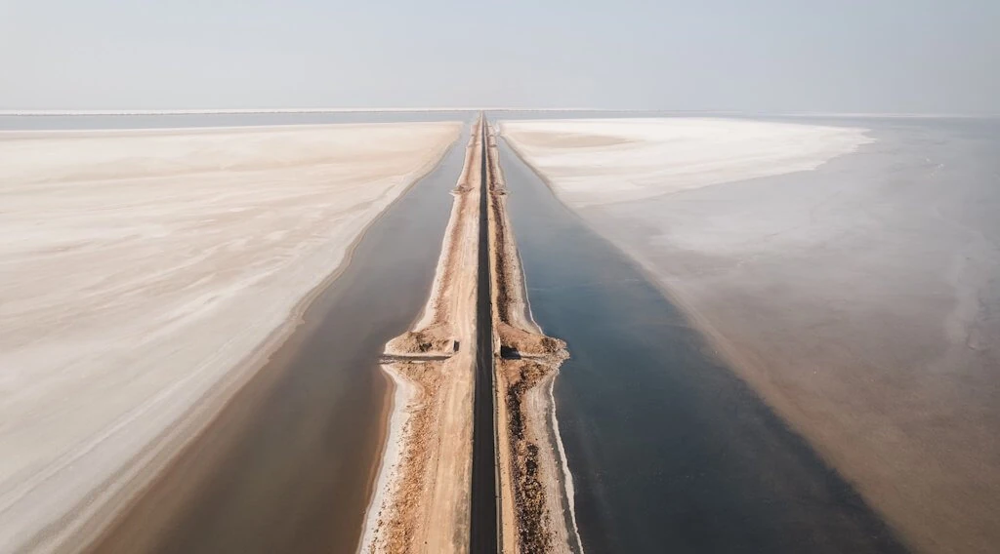
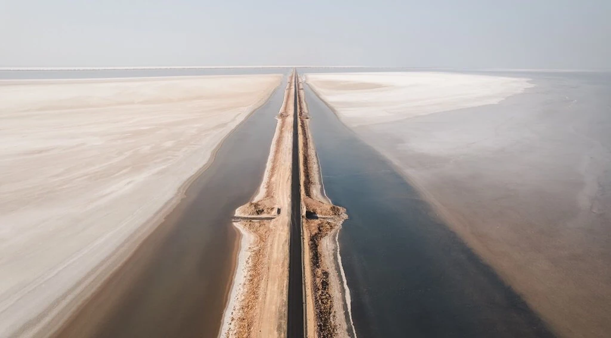

Kutch
 

Road to Heaven
Route Information
Length 278 km (173 mi)
Existed 2019 (Construction began)–present
Major Junctions
West end Khavda
East end Dholavira
Location
Country India
Highway system
Roads in India
Expressways National State Asian
History
Construction of the Road to Heaven began in 2019, aiming to enhance connectivity within the region and support
tourism, especially to the Dholavira site, a UNESCO World Heritage Site as of 2021. In the run-up to the G-20
Summit, the Government of India cleared the 31.9 km-long Khavda-Khadir road, through the Rann of Kutch.
Route
Running from Khavda to Dholavira, the road travels through the heart of the white desert, near the Rann of Kutch
Lake, showcasing the natural landscape of the area.